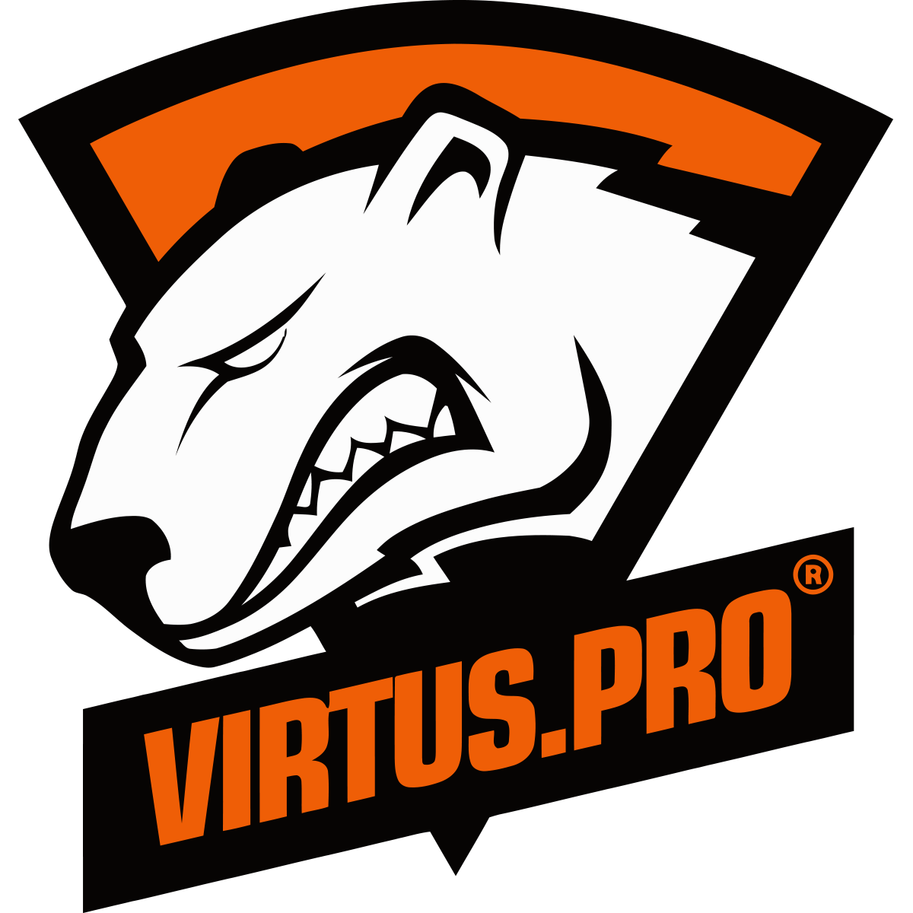
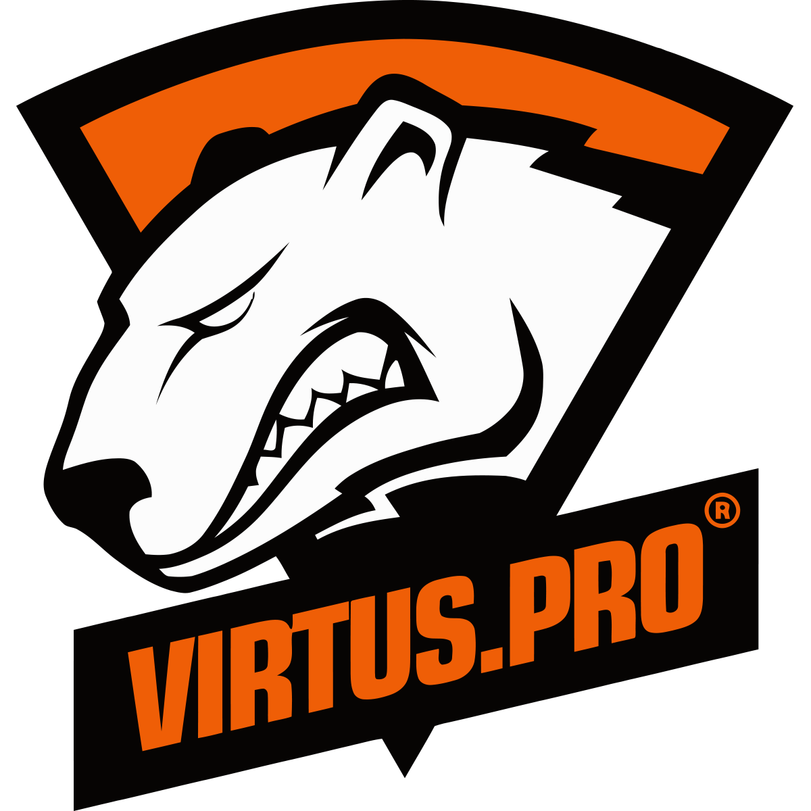
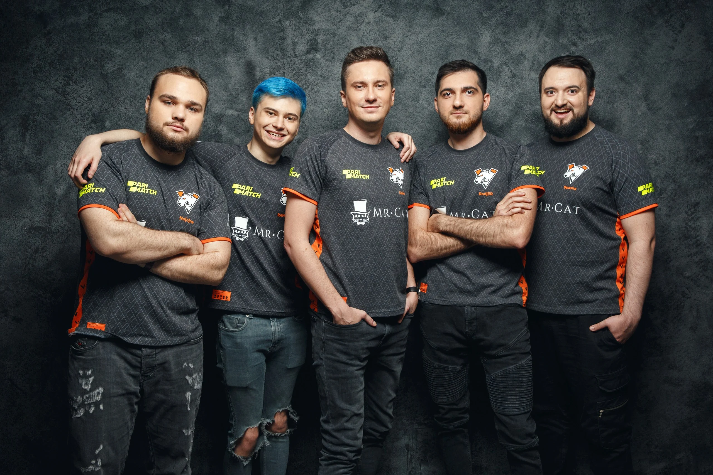
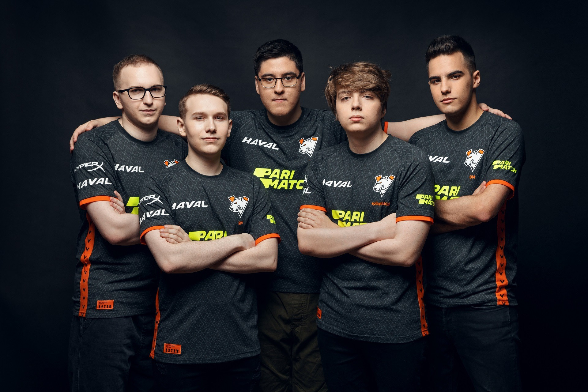
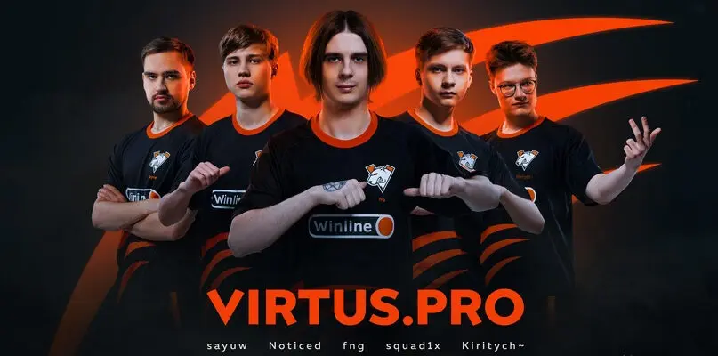
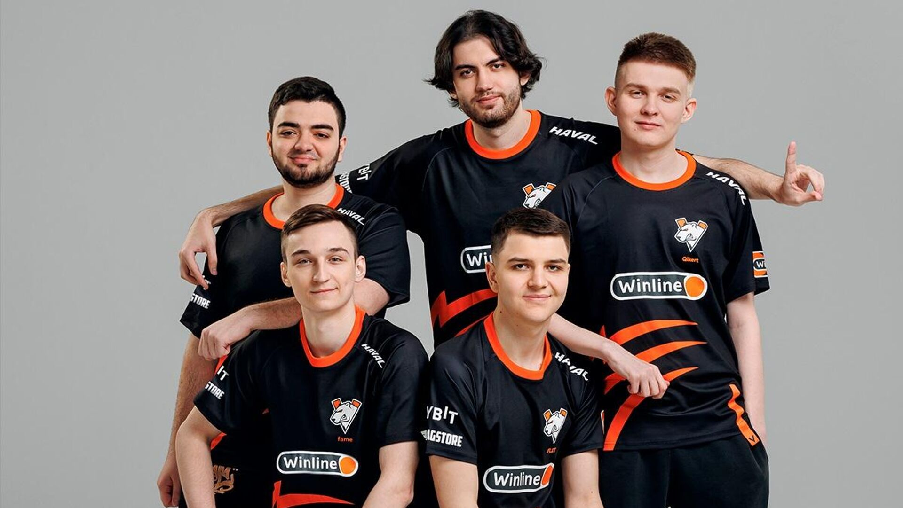
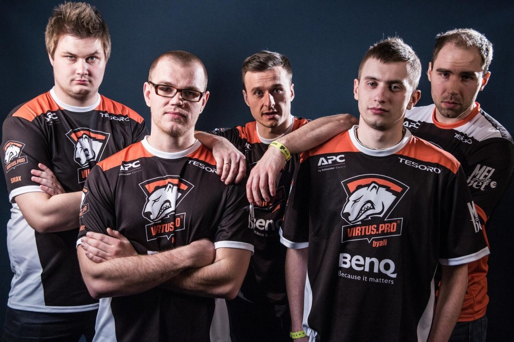
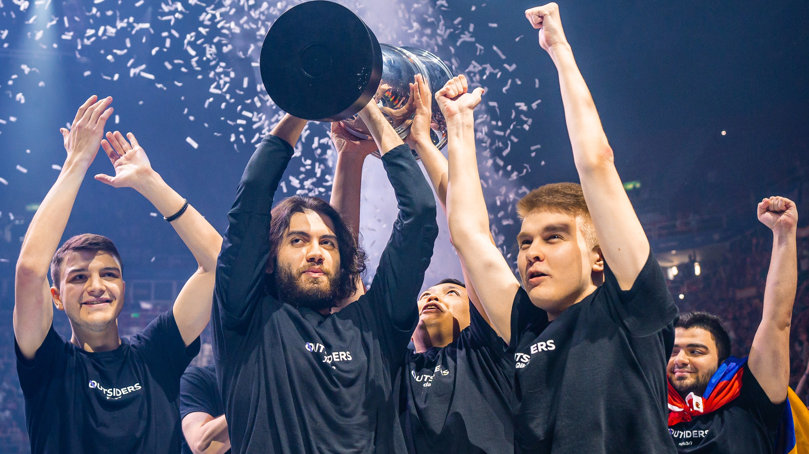

Об организации:
 
 
Virtus.pro — один из самых титулованных и старейших киберспортивных клубов мира, основанный 1 ноября 2003 года. Составы клуба — многократные чемпионы международных турниров категории «мейджор» по Dota 2, Counter-Strike: Global Offensive и в других дисциплинах. Virtus.pro входит в топ-10 мира по количеству заработанных призовых — $19.5 млн. На данный момент клуб имеет составы по Dota 2, CS2, Rainbow 6 Siege, Warface, Escape from Tarkov: Arena, академию CS2 — VP.Prodigy, а также женский состав по CS2 — VP.Angels.
В сентябре 2014 года Virtus.pro подписывает стак NVMI в качестве второго состава по Dota 2 — VP.Polar, а в апреле 2015 этот ростер стал основным в клубе. На TI5 Illidan, God, DkPhobos, Lil и fng обыграли в плей-офф одного из главных фаворитов турнира, Team Secret, что помогло Медведям впервые в истории попасть в топ-5 на главном турнире года.
В 2016 году Медведи не сумели пройти отбор на TI, что повлекло за собой роспуск текущей команды и подписание нового состава, впоследствии названного «золотым». Алексей «Solo» Березин собрал команду, в которую вошли Роман «RAMZES666» Кушнарев, Владимир «No[o]ne» Миненко, Павел «9pasha» Хвастунов и Илья «Lil» Ильюк. В таком составе команда дошла до финала The Kiev Major 2017, заняла 5 место на TI7, уступив лишь будущим чемпионам турнира Team Liquid, а также выиграла первый мейджор сезона 2017/18. В начале 2018 года в составе по Dota 2 произошла замена: вместо Lil на четвёртую позицию пришёл RodjER. Вместе с ним команда доминировала в двух следующих DPC-сезонах и выиграла ещё четыре мейджора, став первым в мире чемпионом пяти мейджоров суммарно.
Так же команда "снялась" в единственном фильме серии True Sight, снятому не по The International, но, к сожалению, со проигравшей стороны. Ребята проиграли в финале Киевского Мейджора
DOTA 2
The Kuala Lumpur Major(2018) - 1 место
ESL One Birmingham 2018 - 1 место
The Bucharest Major(2018) - 1 место
ESL One Katowice 2018 - 1 место
ESL One Hamburg 2017 - 1 место

Текущий состав команды, их позиции и дата присоединения к команде :
Илья 'Kiritych ' Ульянов --- Керри --- 2023-03-08
Илья 'squad1x' Кувалдин --- Мидер --- 2022-12-06
Евгений 'Noticed' Игнатенко --- Оффлейнер --- 2022-12-06
Владислав 'Antares' Кертман --- Частичная Поддержка --- 2024-04-25
Артём 'Fng' Баршак --- Поддержка(капитан) --- 2023-03-08
Сергей 'G' Брагин --- Тренер --- 2023-05-02
Counter-Strike 2
В 2012 году VP переходит из CS 1.6 в CS:GO. 25 января 2014 года клуб подписал польскую пятёрку AGAiN: TaZ, NEO, pashaBiceps, Snax и byali. Этот состав выиграл для VP первый мейджор — ESL One Katowice 2014. На протяжении последующих четырёх лет ростер выиграл множество крупных международных турниров и стабильно входил в топ-10 мирового рейтинга.
С российским же составом команде удалось выиграть Intel Extreme Masters Rio Major в 2022 году, но из-за санкций пришлось сделать ребрендинг : новым названием команды стало Outsiders.
 
Текущий состав команды, их роли и дата присоединения к команде :
Евгений 'Fl1t' Лебедев --- Риффлер --- 2021-10-22
Денис 'electroNic' Шарипов --- Риффлер --- 2024-04-15
Давид 'n0rb3r7' Даниелян --- Опорник --- 2022-05-31
Пётр 'fame' Болышев --- Ентри-Фрагер --- 2022-05-31
Джами 'Jame' Али --- Снайпер(капитан) --- 2019-12-16
Дастан 'dastan' Акбаев --- Тренер --- 2019-12-16